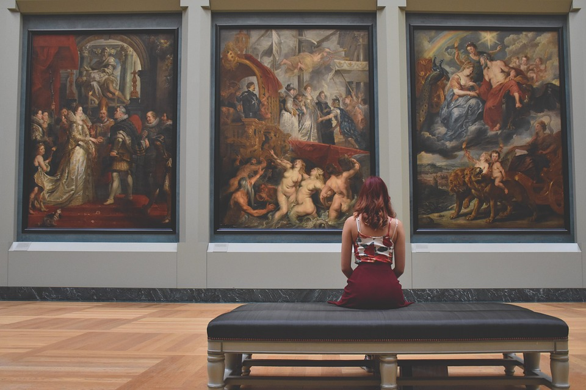
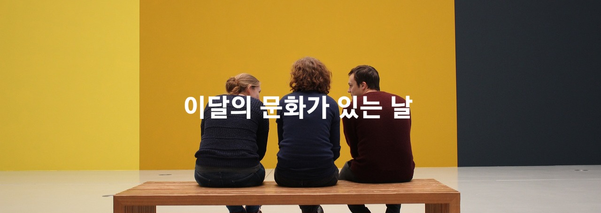
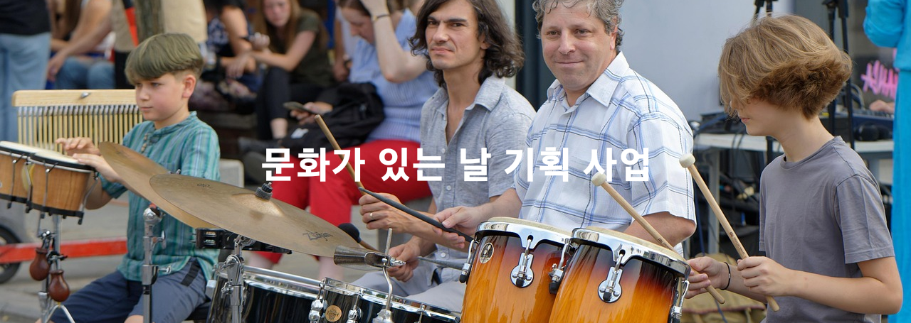

영화
메가박스, CGV, 롯데시네마에서 영화를 관람할 경우, 오후 5시부터 9시 사이에 2D영화 예매 시 7천 원에 예매 가능합니다.
스포츠
한국프로농구, V-리그, K리그, KBO 리그 관람료 50% 할인 받을 수 있습니다.
공연 예술

국립극장, 예술의 전당, 세종문화회관 등 주요 공연장 공연 할인 받을 수 있습니다.
전시
국립현대미술관 등 박물관, 미술관 할인 및 무료, 관람시간 연장합니다.
기타
(이미지를 누르면 이달의 문화가 있는 날 페이지로 이동합니다.)
이달의 문화가 있는 날은 지역의 문화 행사를 모아 시민들이 쉽게 지역 문화 행사를 찾을 수 있게 해줍니다.

문화가 있는 날 기획사업은 일상에서 문화를 쉽게 접할 수 있도록 매달 마지막 수요일과 그 주간에 지역 곳곳에 지원합니다.
청년예술가를 위한 청춘마이크, 노년세대를 위한 실버마이크 그리고 문화 취약지역으로 문화 향유기회를 확대 지원합니다.